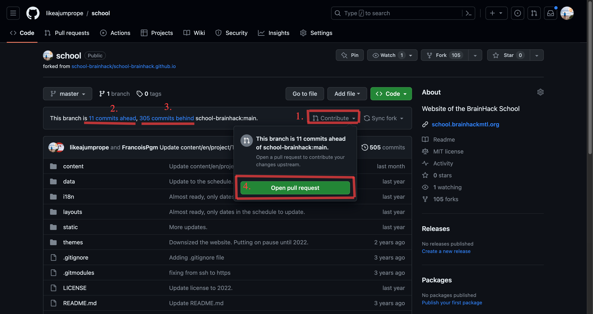
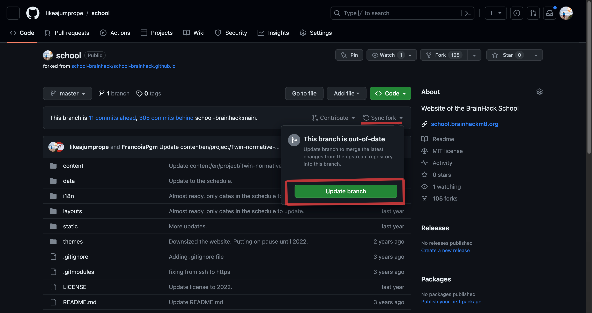

Forking
Making changes as someone else’s repository
In the previous section, we made changes to our own repository and we were able to accept the changes ourselves because we are owner of the repository.
Forking a repository
In order to make changes to someone else’s repository you have to get rights for the repository. On Github, this means that you make a copy of the repository under your account. This process is called forking a repository.

Challenge: Contribute to someone else’s repository.
Navigate to the repository https://github.com/likeajumprope/Git_course. This repository is owned by me, so you are not the owner of the repository and you won’t be able to make changes right away.
Fork the repository into your account.
1. Click on the fork button on on the main page of the repository. You need to be logged into your github account to create a fork.

You can leave everything the way git suggests it for now. Click create repository.

A fork of the repository should now appear under your account name. You should also still see the original repository. I have added here a picture of a repository that I have forked into my account:

Now go to the add file tab. Click on it and select Add new file.

Create now a new .md file with a name of your liking. Click on the editing button and add a line to the file. for example, state your favorite animal.

Commit your changes. You have now added changes to your fork of the repository that are not part of my repository.
Challenge: Think: Why is this useful?
Origin and upstream repository
To differentiate between the fork and the original repository, Github has introduced special terms for those two repositories.
The fork in your account is called origin repository.
The repository the fork is forked from (my repo) is called upstream repository.
Create a pull request to the upstream repository
Let’s assume you consider your changes so meaningful that they should be integrated in the upstream repository. This is again achieved by creating a pull request. In contrast to the previous PR, where you PR-ed between two branches that you owned, this time you will create a PR to a repository that you are not the owner of.
Go back to the code section of your repository. You should see that you have changes in your repository that not part of the upstream repository (yet) similar to the screenshot below (2.):

Click on the Contribute button. In the screenshot above, you can also see indicated that the upstream repository has changes that are not part of your origin repository yet (3.). This can happen when the author of the upstream repository has made changes to the repo since you have forked the repository.
It is good practice to update your own repository before creating a PR. if you need to update your repository, click on the sync fork button and update your branch:

Once you have updated your branch (if necessary), create a pull request. Leave a nice message for the owner of the upstream repository (4.).
Check the upstream repository. You should see your PR under the PR section, marked as open. In contract to the previous PR, you won’t be able to merge this PR yourself, as you are not the owner of the upstream repository. Instead, you will have to wait for the owner of the upstream repo to accept your PR.
Challenge: Think: Why is it a good idea to update (sync) your branch before opening a PR?